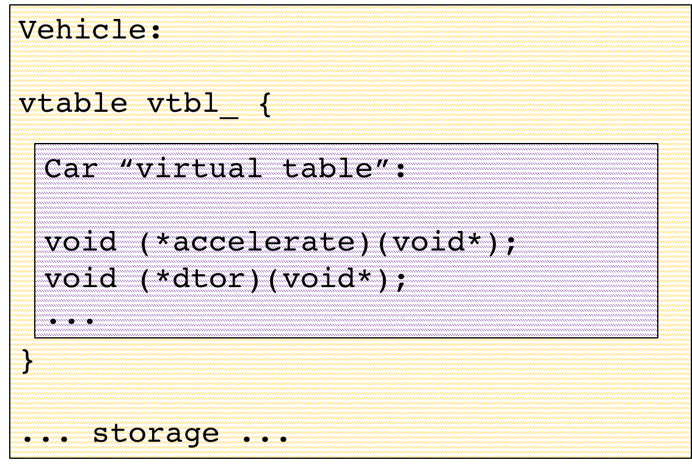

<!doctype html>
<html>
  <head>
    <meta charset="utf-8">
    <meta name="viewport" content="width=device-width, initial-scale=1.0, maximum-scale=1.0, user-scalable=no">

    <title>Runtime Polymorphism: Back to the Basics</title>
    <meta name="author" content="Louis Dionne">

    <link rel="stylesheet" href="reveal/css/reveal.css">
    <link rel="stylesheet" href="reveal/css/theme/black.css">
    <link rel="stylesheet" href="custom.css">

    <!-- Theme used for syntax highlighting of code -->
    <link rel="stylesheet" href="reveal/lib/css/zenburn.css">

    <!-- Printing and PDF exports -->
    <script>
      var link = document.createElement( 'link' );
      link.rel = 'stylesheet';
      link.type = 'text/css';
      link.href = window.location.search.match( /print-pdf/gi ) ? 'reveal/css/print/pdf.css' : 'reveal/css/print/paper.css';
      document.getElementsByTagName( 'head' )[0].appendChild( link );
    </script>
  </head>
  <body>
    <div class="reveal">
      <div class="slides">
        <section data-markdown=""
                 data-separator="^====+$"
                 data-separator-vertical="^----+$"
                 data-notes="^Note:">
        <script type="text/template">

## Runtime Polymorphism:<br>Back to the Basics
#### Louis Dionne, CppCon 2017

==============================================================================

### What is runtime polymorphism <br> and when do you need it?

----

### Returning related types from a function

```c++
??? getVehicle(std::istream& user) {
  std::string choice;
  user >> choice;
  if      (choice == "car")   return Car{...};
  else if (choice == "truck") return Truck{...};
  else if (choice == "plane") return Plane{...};
  else                        die();
}
```

----

### Storing related types in a container

```c++
int main() {
  // Should store anything that has an accelerate() method
  std::vector<???> vehicles;

  vehicles.push_back(Car{...});
  vehicles.push_back(Truck{...});
  vehicles.push_back(Plane{...});

  for (auto& vehicle : vehicles) {
    vehicle.accelerate();
  }
}
```

----

### `variant` sometimes does the trick

- But it only works for closed set of types
- Using visitation is sometimes (often?) not convenient

----

### Bottom line:
#### Manipulating an open set of related types with different representations

====================

### C++ has a solution for that!

----

### Inheritance

<pre><code data-sample="code/inheritance.cpp#Vehicle"></code></pre>

----

### Usage

<pre><code data-sample="code/inheritance.cpp#main"></code></pre>

----

### Under the hood


----

### Vtables from scratch

<pre><code data-sample="code/inheritance-manual.cpp#vtable"></code></pre>

<pre><code data-sample="code/inheritance-manual.cpp#Vehicle"></code></pre>

----

<pre><code data-sample="code/inheritance-manual.cpp#subclasses"></code></pre>

----

<pre><code data-sample="code/inheritance-manual.cpp#main"></code></pre>

====================

### Aside
#### Inheritance has many problems

----

### Bakes in reference semantics

```c++
void foo(Vehicle& vehicle) {
  ...
  vehicle.accelerate();
  ...
}
```

----

### Slicing

```c++
void foo(Vehicle vehicle) {
  ...
  vehicle.accelerate();
  ...
}
```

----

### Heap allocations

```c++
std::unique_ptr<Vehicle> getVehicle(std::istream& user) {
  std::string choice;
  user >> choice;
  if      (choice == "car")   return std::make_unique<Car>(...);
  else if (choice == "truck") return std::make_unique<Truck>(...);
  else if (choice == "plane") return std::make_unique<Plane>(...);
  else                        die();
}
```

----

### Bakes in nullable semantics

```c++
std::unique_ptr<Vehicle> vehicle = getVehicle(std::cin);
// can vehicle be null?
```

----

### Ownership hell

```c++
Vehicle*                 getVehicle(std::istream& user);
std::unique_ptr<Vehicle> getVehicle(std::istream& user);
std::shared_ptr<Vehicle> getVehicle(std::istream& user);
```

----

### No value semantics

```c++
std::vector<std::unique_ptr<Vehicle>> vehicles;
vehicles.push_back(std::make_unique<Car>(...));
vehicles.push_back(std::make_unique<Truck>(...));
vehicles.push_back(std::make_unique<Plane>(...));

std::vector<std::unique_ptr<Vehicle>> copy = vehicles;
for (auto& vehicle : copy) {
  vehicle->accelerate();
}
```

----

### Doesn't play well with algorithms

```c++
std::vector<std::unique_ptr<Vehicle>> vehicles;
vehicles.push_back(std::make_unique<Car>(...));
vehicles.push_back(std::make_unique<Truck>(...));
vehicles.push_back(std::make_unique<Plane>(...));

std::sort(vehicles.begin(), vehicles.end()); // NOT what you wanted!
```

----

### Intrusive

```c++
namespace lib {
  struct Motorcycle { void accelerate(); };
}

void foo(Vehicle& vehicle) {
  ...
  vehicle.accelerate();
  ...
}

Motorcycle bike;
foo(bike); // can't work!
```

----

### Listen to Sean Parent, not me
https://youtu.be/QGcVXgEVMJg

====================

### I just wanted this!

```c++
interface Vehicle { void accelerate(); };

namespace lib {
  struct Motorcycle { void accelerate(); };
}
struct Car   { void accelerate(); };
struct Truck { void accelerate(); };

int main() {
  std::vector<Vehicle> vehicles;
  vehicles.push_back(Car{...});
  vehicles.push_back(Truck{...});
  vehicles.push_back(lib::Motorcycle{...});

  for (auto& vehicle : vehicles) {
    vehicle.accelerate();
  }
}
```

----

### How might that work?

<pre><code data-sample='code/sean.cpp#Vehicle'></code></pre>

<!-- TODO: The following two slides are way too dense -->

----

<pre><code data-sample='code/sean.cpp#VehicleBase'></code></pre>

----

### Just like inheritance under the hood


----

### But we're decoupled from inheritance
#### Now we can have some fun

==============================================================================

### Goal:
#### Independent storage and method dispatch

- Storage _policy_
- VTable _policy_

====================

### Remote storage


----

### How that's implemented

<pre><code data-sample='code/remote_storage.cpp#Vehicle'></code></pre>

----

### The vtable

<pre><code data-sample='code/vtable.hpp#vtable'></code></pre>

----

### With Dyno

<pre><code data-sample='code/remote_storage.dyno.cpp#vehicle'></code></pre>

----

### Strengths and weaknesses

<ul>
  <li class="strength">Simple model, similar to classic inheritance</li>
  <li class="strength">May be easier to keep ABI stable, unlike other techniques we will see</li>
  <li class="weakness">Always requires an allocation</li>
</ul>

====================

### The _small buffer optimization_ (SBO)


----

### How that's implemented

<pre><code data-sample='code/sbo_storage.cpp#Vehicle::members'></code></pre>

----

### Construction

<pre><code data-sample='code/sbo_storage.cpp#Vehicle::Vehicle'></code></pre>

----

### Destruction

<pre><code data-sample='code/sbo_storage.cpp#Vehicle::~Vehicle'></code></pre>

----

### Method dispatching

<pre><code data-sample='code/sbo_storage.cpp#Vehicle::accelerate'></code></pre>

----

### The vtable (nothing changed)

<pre><code data-sample='code/vtable.hpp#vtable'></code></pre>

----

### Alternative implementation 1


----

### Alternative implementation 2


----

### Simple generalization


----

### With Dyno

<pre><code data-sample='code/sbo_storage.dyno.cpp#vehicle'></code></pre>

----

### Strengths and weaknesses

<ul>
  <li class="strength">Does not always require allocating</li>
  <li class="weakness">Takes up more space</li>
  <li class="weakness">Copy/move/swap is more complicated</li>
  <li class="weakness">Dispatching may be more costly</li>
  <li class="weakness">Size of buffer leaks into the ABI</li>
</ul>

Note:
We need to handle cases where the two types are not the same in swap.

====================

### Always-local storage


----

### Doesn't fit? Doesn't compile!

----

### How that's implemented

<pre><code data-sample='code/local_storage.cpp#Vehicle::Vehicle'></code></pre>

----

### Destruction

<pre><code data-sample='code/local_storage.cpp#Vehicle::~Vehicle'></code></pre>

----

### Method dispatching

<pre><code data-sample='code/local_storage.cpp#Vehicle::accelerate'></code></pre>

----

### With Dyno

<pre><code data-sample='code/local_storage.dyno.cpp#vehicle'></code></pre>

----

### Strengths and weaknesses

<ul>
  <li class="strength">No allocation &ndash; ever</li>
  <li class="strength">Simple dispatching</li>
  <li class="weakness">Takes up more space</li>
  <li class="weakness">Size of buffer leaks into ABI</li>
</ul>

====================

### Some benchmarks

Creating many 4 bytes objects
```
                                 Time         Iterations to converge
remote storage                   54 ns        13264107
SBO storage (4 bytes)             2 ns        284751940
SBO storage (8 bytes)             2 ns        292815969
SBO storage (16 bytes)            2 ns        288159525
local storage (16 bytes)          2 ns        332593708
```

----

Creating many 16 bytes objects
```
                                 Time         Iterations to converge
remote storage                   54 ns        13214030
SBO storage (4 bytes)            54 ns        12794502
SBO storage (8 bytes)            54 ns        13144553
SBO storage (16 bytes)            2 ns        287227800
local storage (16 bytes)          2 ns        322754665
```

----

Accessing many 4 bytes objects<br>
(10 x 3 method calls, SBO with bool)
```
                                 Time         Iterations to converge
remote storage                   46 ns        15344820
SBO storage (4 bytes)            59 ns        12048400
SBO storage (8 bytes)            59 ns        12067717
SBO storage (16 bytes)           59 ns        11312400
local storage (16 bytes)         47 ns        15127808
```

----

Accessing many objects<br>
(half 8 bytes, half 16 bytes, SBO with bool)
```
                                 Time         Iterations to converge
remote storage                   46 ns        14148932
SBO storage (4 bytes)            55 ns        12897995
SBO storage (8 bytes)            57 ns        11330894
SBO storage (16 bytes)           57 ns        12648393
local storage (16 bytes)         46 ns        14811617
```

----

Accessing many 4 bytes objects
<br>(10 x 3 method calls, SBO with pointer)
```
                                 Time         Iterations to converge
remote storage                   47 ns        13849319
SBO storage (4 bytes)            46 ns        14770924
SBO storage (8 bytes)            46 ns        15021298
SBO storage (16 bytes)           46 ns        15104632
local storage (16 bytes)         47 ns        14765222
```

----

Accessing many objects<br>
(half 8 bytes, half 16 bytes, SBO with pointer)
```
                                 Time         Iterations to converge
remote storage                   48 ns        14687893
SBO storage (4 bytes)            47 ns        14681670
SBO storage (8 bytes)            47 ns        15141945
SBO storage (16 bytes)           48 ns        14424959
local storage (16 bytes)         48 ns        14740225
```

----

### Guidelines

- Use local storage whenever you can afford it
- When space is very important, use remote storage
- Otherwise, use SBO with the largest size you can afford (depending on your problem)

====================

### Non-owning storage

----

### Basically a polymorphic view

```c++
void process(VehicleRef vehicle) {
  ...
  vehicle.accelerate();
  ...
}

int main() {
  Truck truck{...};
  process(truck); // Don't want to copy here!
}
```

----

### In pictures


----

### How that's implemented

<pre><code data-sample='code/non_owning_storage.cpp#VehicleRef'></code></pre>

----

### Usage differs a bit

<pre><code data-sample='code/non_owning_storage.cpp#main'></code></pre>

====================

### Shared remote storage


<!-- TODO: Show some use cases (e.g. Sean Parent's `document`) -->

----

### How that's implemented

<pre><code data-sample='code/shared_remote_storage.cpp#Vehicle'></code></pre>

==============================================================================

### What about vtables?

----

### Normally, it is remote


----

### Turns out we have some choices

====================

### Inlining the vtable in the object



----

### How that's implemented

<pre><code data-sample='code/local_vtable.cpp#Vehicle'></code></pre>

----

### With Dyno

<pre><code data-sample='code/local_vtable.dyno.cpp#vehicle'></code></pre>

----

### Usually a pessimization

====================

### Partial vtable inlining


----

### The Vtable &mdash; remote part

<pre><code data-sample='code/joined_vtable.cpp#vtable'></code></pre>

----

### The Vtable &mdash; local part

<pre><code data-sample='code/joined_vtable.cpp#joined_vtable'></code></pre>

----

### The polymorphic wrapper

<pre><code data-sample='code/joined_vtable.cpp#Vehicle'></code></pre>

----

### With Dyno

<pre><code data-sample='code/joined_vtable.dyno.cpp#vehicle'></code></pre>

----

### Some benchmarks

Calling 2 virtual functions (100 x 2 calls)
```
                                 Time         Iterations to converge
everything remote                462 ns       1527340
1 function local                 438 ns       1384193
2 functions local                487 ns       1430346
```

----

### Not very conclusive

----

### Let's look at assembly

<iframe width="1300px" height="500px" src="https://gcc.godbolt.org/e#z:OYLghAFBqd5QCxAYwPYBMCmBRdBLAF1QCcAaPECAKxAEZSBnVAV2OUxAHIGDjnkCAagBqAFQCGAIwA2mQQFIA7ACF5ABgCCgwQDdUedIIgAqAGa0AlBD0HjF%2BQGZVm7TcMnTAJitu7j51q6%2Bu5mDj7Bfk7qgW5GZgAs4bb2UZpKACL%2B0dEEmAC2AA7S4rkKDgDCBACeBZgAduJ5cqKO2NGYAB65xHUiEjJyaHU8ugRSsllpUxo8fAKCxPmouQD64nVVCirRrsGC5hAWW8q6BbwrALStBwyY0qYrKScZO0EG%2B56Hx6fnVw7YXggt3uj38W0yLjehlMDi%2BShOOjOxEu11hwIeT3Br1ipnicJUP2RfwBePRoKcWMhYnGg1QwwIxkEQxGiPOkxiEUEZPZL1SGmis34QmkqGQ4mkaw2x2xewOR3hoxkKwAdDc7hiwS9ITjPvKCToCErVZ8yZitRz3jD8QjDRLVWj1eTnooIRboXi9TajbigY6zS7XtSBky6SzbSt2btbFzHTyA3zojiIIs8stMJKqvJPAA2QTiT2vcSq2iHSN542lvnaItWp6F1UeuOuxOyiAisUS9aZnN5guQmsluv9itDwI12Gj6sNysBc2cCykaRcACsnFIdS4ajXqC45Szqk8JyYrHYCk8Dloa4Im/nC4A1iBl7RlQBObNqRQADniF4cik8y7LouXDxGuG6cFupA7pwa4MCAaikNeEHzqQcCwEgaCFHgshkBQECYQU2GYMQKDFHUwDLmoCGmNh3RwRAkg3qQmFNHUBAAPJ1NIVRMfgiwCHgOiYHByELqgZx4KGXAXOxDiCBcPDoI46TIPu%2B60KBjAsGwHCWMBnCruuTHQR0n7Zhc2bxEyZHAIIy7KmoDlGLghAkGeF6kII5SoFhOHuZYV43hY94gPEn4OQ4L6eLQy7ZmZniKPET76Zp4GQdBsHwYhQULkunCeGBxlcIFokLkJxAMJJG7xEAA%3D"></iframe>

Note:
Chandler told me:
With the remote vtable, the vptr has to be reloaded every time because it
could have changed during the virtual call. When the function pointers are
in the object, the compiler can see they don't change.

----

### The idea

- By default, all methods are in the remote vtable
- Consider inlining some methods if
  - you have slack space
  - you know you're calling them often
  - you've measured it makes a difference

==============================================================================

### Summary

- Many ways of storing polymorphic objects
  + On the heap
  + Small Buffer Optimization (SBO)
  + Pre-allocated buffer (_local_ storage)
  + Shared heap storage
  + Polymorphic references
  + ... (I don't know them all)

----

### Summary

- Generating own vtable provides fine-grained control
- Type erasure is tedious to do manually

----

### The Dyno library is available

https://github.com/ldionne/dyno

----

### Useful links and related material

- Sean Parent's talk: https://youtu.be/QGcVXgEVMJg
- Zach Laine's talk: https://youtu.be/0I0FD3N5cgM
- Boost.TypeErasure: ...
- Eraserface: ...
- liberasure: ...
- `adobe::poly`: ...
- 2004 thread w/ Dave Abrahams: <small>https://groups.google.com/forum/m/#!msg/comp.std.c++/MHkaDQOE1xI/5Hf2G6Ywr4UJ</small>

<!-- TODO: Complete these links -->

----

### Thank you

https://ldionne.com

        </script>
        </section>
      </div>
    </div>

    <script src="reveal/lib/js/head.min.js"></script>
    <script src="reveal/js/reveal.js"></script>

    <script>
      Reveal.initialize({
        slideNumber: 'c/t', // 'c/t' -> useful when authoring to know how many slides there are
        history: true,
        transition: 'none',

        dependencies: [
          { src: 'reveal/plugin/markdown/marked.js' },
          { src: 'reveal/plugin/markdown/markdown.js' },
          { src: 'reveal/plugin/notes/notes.js', async: true },
          { src: 'reveal/plugin/highlight/highlight.js', async: true, callback: function() { hljs.initHighlightingOnLoad(); } },
          { src: 'plugin/sampler.js' }
        ]
      });
    </script>
  </body>
</html>
